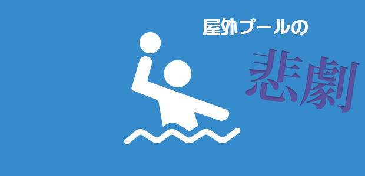

ふとよぎった高校時代の記憶
うちの塾で、今年の夏休みに寺修行に行く企画があります。
掃除や座禅はもちろん、滝行まで体験できるというのですから面白そうですよね。
その滝行、まあ夏ならむしろ気持ち良いのでしょうが、今ならどうなのか。
健康にも良いという話なので、この４月下旬に冷水シャワーとやらを敢行しました。
いやあ、まだまだ冷たいですわ…。
終わってみると体がポカポカして血行も良くなった感じはありますが、浴びている最中は「ハフッ、ハフッ…！」なんて奇声が上がっちゃいます（照）。
そんな自宅滝行の最中、蘇ってくる記憶がありまして…。
それは高校時代。部活で水球をしていた頃のことです。
私の高校は県立の古めかしい施設だったので、プールはもちろん屋外。
ですから冬の寒い時期はシーズンオフということで、筋トレやマラソンで体作りをし、プールでの練習はありませんでした。
プール解禁となるのは４月の中旬。
水温が15℃というまだまだ冷たくてブルブル震える環境の中、泳ぎ始めるわけです。
この冷水シャワーでその頃の感覚が蘇ったわけですが、もう一つついでに水泳部時代のキツい思い出が脳裏をよぎったのでした。
今なら絶対入りませんね…
水球というスポーツはどちらかというとマイナーだとは思います。
それでも当時、千葉県内では30校ほどの高校がエントリーしていました。
私の高校の強さは普通程度…。
やっぱり房総方面の海で育ったような人たちには泳ぎの時点でかないません。
水球は言ってみれば、水上のハンドボールのようなもので、攻守の状況で行ったり来たり泳がなければなりませんし、水球独自の技術である巻き足（立ち泳ぎ）や足が床につかない状況でのジャンプなど、いろいろ総合すると瞬発力・持久力ともに必要となる過酷な競技です。
そんなに強くないうちの高校でさえも練習はハードでした。
夏合宿（といっても、校内の施設で寝泊まりするだけ）のときには、午前中に何千メートルも泳ぎ、午後は暗くなるまで水球の練習。
終わるころにはフラフラです。
さて、体力的には削られていましたが、好きでやっていたわけですから充実もしていました。
しかし、この時だけはどうしても嫌だったという出来事がありました…。
たしか夏合宿の最中だったと思います。
朝、プールサイドに行ってみると、先に到着していた部員が何やらざわついているのです。
私「どうしたの？」
部員「どうしたもこうしたも…アレ見てみ」
私「ん…なんだアレ…あっ！」
プールに浮かんでいたもの、それは明らかに哺乳類が排泄したものと思しき‘糞’。
色つやからして、犬のものである可能性が高い。
誰でもどんな動物でも侵入できる屋外プール。当然ありうることではありますが、初めての出来事でした。
私「これ、どうするよ？」
部員「うーん…」
私「他の練習に切り替えるか？」
部長「いや、やらぬわけにはいくまい…！」
私「マジか…！（泣）」
というわけで、まずはブツを網ですくいました。
そして、いつもの５～６倍もの量の消毒用固形塩素をぶち込みました。
そして練習開始！
「むぐぐぐ…いつもより塩素が強く、先の先が見えない…」
「ぐおぉぉ！ なんだこの食物繊維は！！！！」
いやあ、今なら絶対こんなプールには入らないですね。
こういう種類のつらさを味わったのはこれが最初で最後でしたが、いろんな意味でよい経験になりました（笑）。